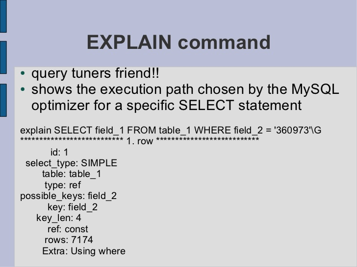
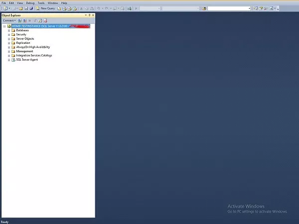

A. MySQL Evaluation Plan
MySQL menggunakan sintaks explain query yang sama dengan PostgreSQL, tetapi hasilnya adalah tabel yang isinya tidak
mudah dipahami. Namun, menjalankan peringatan acara setelah perintah menjelaskan akan menampilkan rencana evaluasi
dalam format yang lebih dapat dibaca manusia
Tergantung detail tabel, kolom, indeks, dan kondisi di klausa WHERE, pengoptimal MySQL mempertimbangkan banyak
teknik untuk melakukan pencarian yang terlibat dalam query SQL secara efisien. Query pada tabel besar dapat
dilakukan tanpa membaca semua baris; gabungan yang melibatkan beberapa tabel dapat dilakukan tanpa membandingkan
setiap kombinasi baris. Rangkaian operasi yang dipilih pengoptimal untuk menjalankan query paling efisien disebut
"query execution plan", juga dikenal sebagai rencana EXPLAIN. Tujuan Anda adalah untuk mengenali aspek dari rencana
EXPLAIN yang menunjukkan bahwa query dioptimalkan dengan baik, dan untuk mempelajari sintaks SQL dan teknik
pengindeksan untuk meningkatkan rencana jika Anda melihat beberapa operasi yang tidak efisien.
Perintah EXPLAIN memberikan informasi tentang bagaimana MySQL menjalankan query. EXPLAIN dapat bekerja dengan
pernyataan SELECT, DELETE, INSERT, REPLACE, dan UPDATE. Pertama-tama akan menganalisis query asli, kemudian mencoba
mengoptimalkan query dan melihat ke dalam rencana eksekusi query yang dioptimalkan untuk melihat apa yang berubah
dan mengapa.
Menggunakan EXPLAIN sesederhana pra-pending sebelum query SELECT.

B. PostgreSQL Evaluation Plan
Introduction to PostgreSQL EXPLAIN statement
Pernyataan EXPLAIN mengembalikan rencana eksekusi yang dibuat oleh perencana PostgreSQL untuk pernyataan yang diberikan.
EXPLAIN menunjukkan bagaimana tabel yang terlibat dalam pernyataan akan dipindai oleh pemindaian indeks atau pemindaian
sekuensial, dll., Dan jika beberapa tabel digunakan, jenis algoritma gabungan apa yang akan digunakan.
Informasi paling penting dan berguna yang dikembalikan pernyataan EXPLAIN adalah biaya awal sebelum baris pertama
dikembalikan dan biaya total untuk mengembalikan rangkaian hasil lengkap.
Berikut ini adalah sintaks dari pernyataan EXPLAIN:
EXPLAIN [ ( option [, ...] ) ] sql_statement;
di mana opsinya dapat berupa salah satu dari berikut ini:
ANALYZE [ boolean ]
VERBOSE [ boolean ]
COSTS [ boolean ]
BUFFERS [ boolean ]
TIMING [ boolean ]
SUMMARY [ boolean ]
FORMAT { TEXT | XML | JSON | YAML }
Boolean menentukan apakah opsi yang dipilih harus dihidupkan atau dimatikan. Anda dapat menggunakan TRUE, ON, atau 1
untuk mengaktifkan opsi, dan FALSE, OFF, atau 0 untuk menonaktifkannya. Jika Anda menghilangkan boolean, defaultnya
adalah ON.
Explain Analyze
Opsi ANALYZE menyebabkan sql_statement dieksekusi terlebih dahulu dan kemudian statistik run-time aktual dalam informasi yang dikembalikan termasuk total waktu berlalu yang dihabiskan dalam setiap node rencana dan jumlah baris yang sebenarnya dikembalikan.Pernyataan ANALYZE sebenarnya mengeksekusi pernyataan SQL dan membuang informasi keluaran, oleh karena itu, jika Anda ingin menganalisis pernyataan apa pun seperti INSERT, UPDATE, atau DELETE tanpa mempengaruhi data, Anda harus membungkus EXPLAIN ANALYZE dalam transaksi, sebagai berikut:
BEGIN;
EXPLAIN ANALYZE sql_statement;
ROLLBACK
VERBOSE
Parameter VERBOSE memungkinkan Anda untuk menampilkan informasi tambahan mengenai rencana tersebut. Parameter ini disetel ke FALSE secara default.
COSTS
Opsi COSTS mencakup perkiraan biaya awal dan total setiap node rencana, serta perkiraan jumlah baris dan perkiraan lebar setiap baris dalam rencana kueri. Default COSTS ke TRUE.BUFFERS
Parameter ini menambahkan informasi ke penggunaan buffer. BUFFERS hanya dapat digunakan saat ANALYZE diaktifkan. Secara default, parameter BUFFERS disetel ke FALSE.TIMING
Parameter ini mencakup waktu startup aktual dan waktu yang dihabiskan di setiap node dalam output. WAKTU default ke TRUE dan ini hanya dapat digunakan ketika ANALYZE diaktifkan.SUMMARY
Parameter SUMMARY menambahkan informasi ringkasan seperti waktu total setelah rencana kueri. Perhatikan bahwa ketika opsi ANALYZE digunakan, informasi ringkasan disertakan secara default.FORMAT
Tentukan format keluaran dari rencana kueri seperti TEXT, XML, JSON, dan YAML. Parameter ini disetel ke TEXT secara default.Contoh PostgreSQL EXPLAIN
Pernyataan berikut menunjukkan rencana kueri sederhana pada tabel film:
EXPLAIN SELECT * FROM film;
Outputnya adalah sebagai berikut :
QUERY PLAN
Seq Scan on film (cost=0.00..64.00 rows=1000 width=384)
C. SQL Server Evaluation Plan
EVALUATION PLAN - SQL SERVER
Rencana eksekusi akan dihasilkan oleh Query optimizer dengan bantuan statistik dan pohon prosesor Algebrizer \. Ini
adalah hasil dari Pengoptimal kueri dan memberi tahu cara melakukan \ melakukan pekerjaan \ persyaratan Anda.
Ada dua rencana eksekusi yang berbeda - Estimasi dan Aktual.
Estimasi rencana eksekusi menunjukkan tampilan pengoptimal.
Rencana eksekusi sebenarnya menunjukkan apa yang mengeksekusi kueri dan bagaimana hal itu dilakukan.
Rencana eksekusi disimpan dalam memori yang disebut cache rencana, sehingga dapat digunakan kembali. Setiap rencana
disimpan satu kali kecuali pengoptimal memutuskan paralelisme untuk eksekusi kueri.
Ada tiga format berbeda dari rencana eksekusi yang tersedia di SQL Server - Paket grafis, paket Teks, dan paket XML.
SHOWPLAN adalah izin yang diperlukan untuk pengguna yang ingin melihat rencana eksekusi.
Berikut adalah prosedur untuk melihat perkiraan EXECUTION PLAN.
Langkah 1
Hubungkan ke instance SQL Server. Dalam kasus ini, 'TESTINSTANCE' adalah nama instance seperti yang ditunjukkan di snapshot berikut
Langkah 2
Klik opsi Query Baru yang terlihat di layar di atas dan tulis kueri berikut. Sebelum menulis query, pilih
nama database. Dalam hal ini, 'TestDB' adalah nama database.
Select * from StudentTable
Langkah 3
Klik simbol yang disorot dalam kotak warna merah pada layar di atas dan kemudian jalankan query untuk menampilkan rencana eksekusi aktual bersama dengan hasil query seperti yang ditunjukkan pada screenshoot berikut.Langkah 4
Letakkan mouse pada pemindaian tabel yang merupakan simbol kedua di atas kotak warna merah di layar untuk menampilkan rencana eksekusi sebenarnya secara mendetail. Screenshoot berikut muncul.
Langkah 5
Klik Hasil yang ada di sudut kiri atas layar di atas untuk mendapatkan layar berikut.
D. Oracle Evaluation Plan
Memahami Explain Plan
Pernyataan EXPLAIN PLAN menampilkan rencana eksekusi yang dipilih oleh pengoptimal Oracle untuk pernyataan SELECT,
UPDATE, INSERT, dan DELETE. Rencana eksekusi pernyataan adalah urutan operasi yang dilakukan Oracle untuk menjalankan
pernyataan tersebut.
Source tree baris adalah inti dari rencana eksekusi. Ini menunjukkan informasi berikut:
1. Urutan tabel yang direferensikan oleh pernyataan
2. Metode akses untuk setiap tabel yang disebutkan dalam pernyataan
3. Metode gabungan untuk tabel yang dipengaruhi oleh operasi gabungan dalam pernyataan
4. Operasi data seperti filter, pengurutan, atau agregasi
Selain source tree baris, tabel rencana berisi informasi tentang berikut ini:
1. Optimasi, seperti biaya dan kardinalitas setiap operasi
2. Partisi, seperti sekumpulan partisi yang diakses
3. Eksekusi paralel, seperti metode distribusi input gabungan
Hasil EXPLAIN PLAN memungkinkan Anda menentukan apakah pengoptimal memilih rencana eksekusi tertentu, seperti, loop
bersarang yang digabungkan. Ini juga membantu Anda untuk memahami keputusan pengoptimal, seperti mengapa pengoptimal
memilih gabungan loop bersarang daripada gabungan hash, dan memungkinkan Anda memahami kinerja kueri.
Tabel Output PLAN_TABLE
PLAN_TABLE secara otomatis dibuat sebagai tabel sementara global untuk menampung output dari pernyataan EXPLAIN PLAN untuk semua pengguna. PLAN_TABLE adalah tabel keluaran sampel default di mana pernyataan EXPLAIN PLAN menyisipkan baris yang menjelaskan rencana eksekusi. Meskipun tabel PLAN_TABLE secara otomatis disiapkan untuk setiap pengguna, Anda dapat menggunakan skrip SQL utlxplan.sql untuk membuat PLAN_TABLE lokal secara manual di skema Anda. Nama dan lokasi pasti dari skrip ini bergantung pada sistem operasi Anda. Di UNIX, ini terletak di direktori $ ORACLE_HOME / rdbms / admin.
Menjalankan EXPLAIN PLAN
Untuk menjelaskan pernyataan SQL, gunakan klausa EXPLAIN PLAN FOR tepat sebelum pernyataan. Sebagai contoh:EXPLAIN PLAN FOR
SELECT last_name FROM employees;
Ini menjelaskan rencana tersebut ke dalam tabel PLAN_TABLE. Anda kemudian dapat memilih rencana eksekusi dari PLAN_TABLE.
Menampilkan Output PLAN_TABLE
Setelah Anda menjelaskan rencananya, gunakan skrip SQL berikut atau paket PL / SQL yang disediakan oleh Oracle Database untuk menampilkan output tabel rencana terbaru:UTLXPLS.SQL
Skrip ini menampilkan output tabel rencana untuk pemrosesan serial. Contoh 11-2, "EXPLAIN PLAN Output" adalah contoh output tabel rencana saat menggunakan skrip UTLXPLS.SQL.
UTLXPLP.SQL
Script ini menampilkan output tabel rencana termasuk kolom eksekusi paralel.
Fungsi tabel DBMS_XPLAN.DISPLAY
Fungsi ini menerima opsi untuk menampilkan output tabel rencana. Anda dapat menentukan:
1. Nama tabel rencana jika Anda menggunakan tabel yang berbeda dari PLAN_TABLE
2. ID pernyataan jika Anda telah menyetel ID pernyataan dengan EXPLAIN PLAN
3. Opsi format yang menentukan tingkat detail: BASIC, SERIAL, dan TYPICAL, ALL,
Beberapa contoh penggunaan DBMS_XPLAN untuk menampilkan output PLAN_TABLE adalah:
SELECT PLAN_TABLE_OUTPUT FROM TABLE(DBMS_XPLAN.DISPLAY());
SELECT PLAN_TABLE_OUTPUT
FROM TABLE(DBMS_XPLAN.DISPLAY('MY_PLAN_TABLE', 'st1','TYPICAL'));
Membaca EXPLAIN PLAN Output
Bagian ini menggunakan contoh EXPLAIN PLAN untuk mengilustrasikan rencana eksekusi. Pernyataan dalam Contoh 1 digunakan untuk menampilkan rencana eksekusi.Contoh 1 Pernyataan untuk menampilkan EXPLAIN PLAN
SELECT PLAN_TABLE_OUTPUT
FROM TABLE(DBMS_XPLAN.DISPLAY(NULL, 'statement_id','BASIC'));